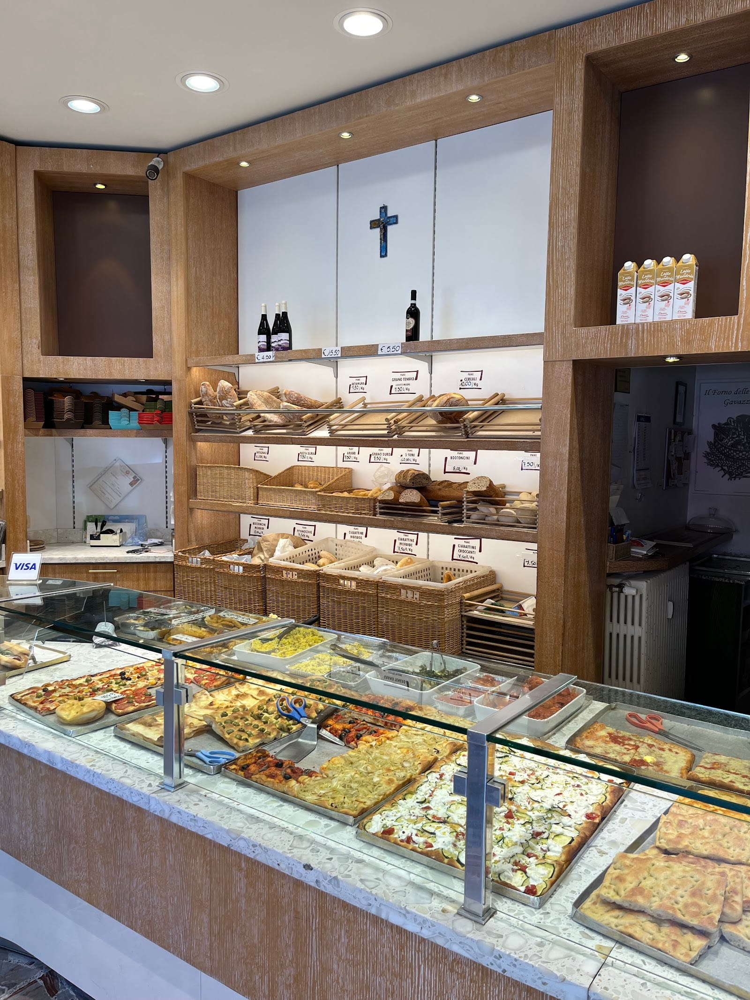
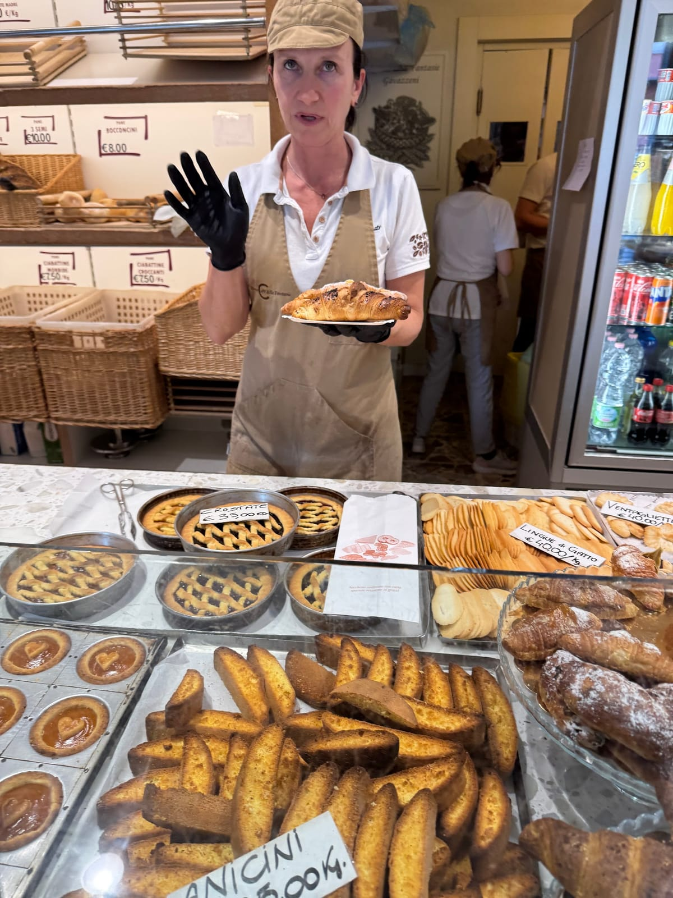
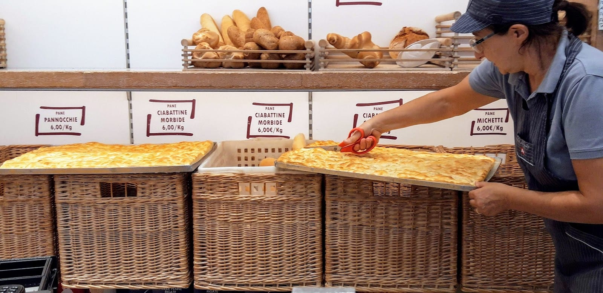
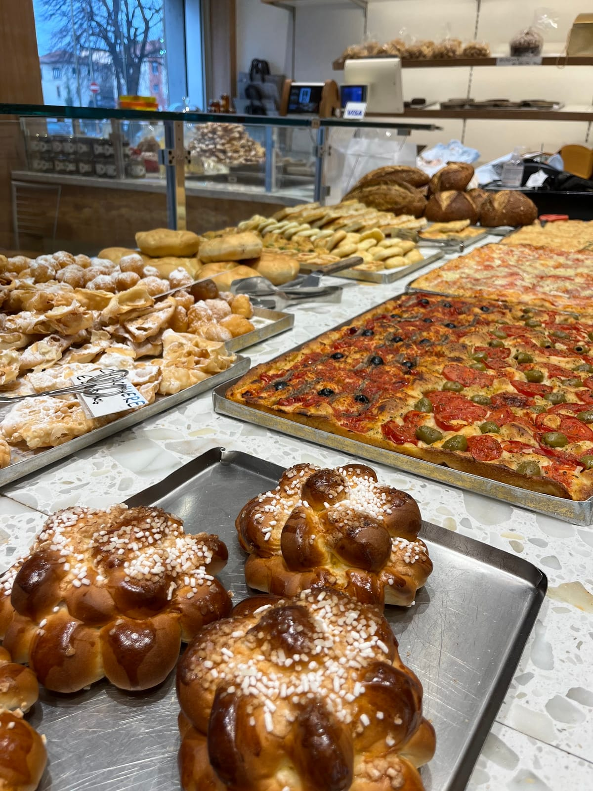
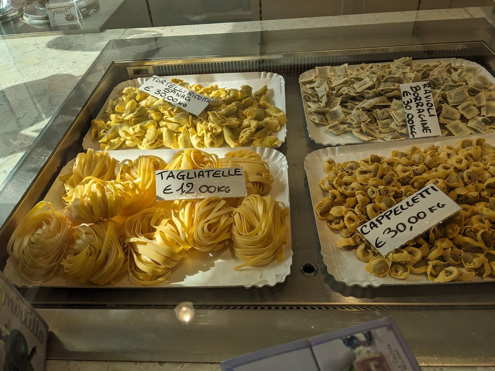
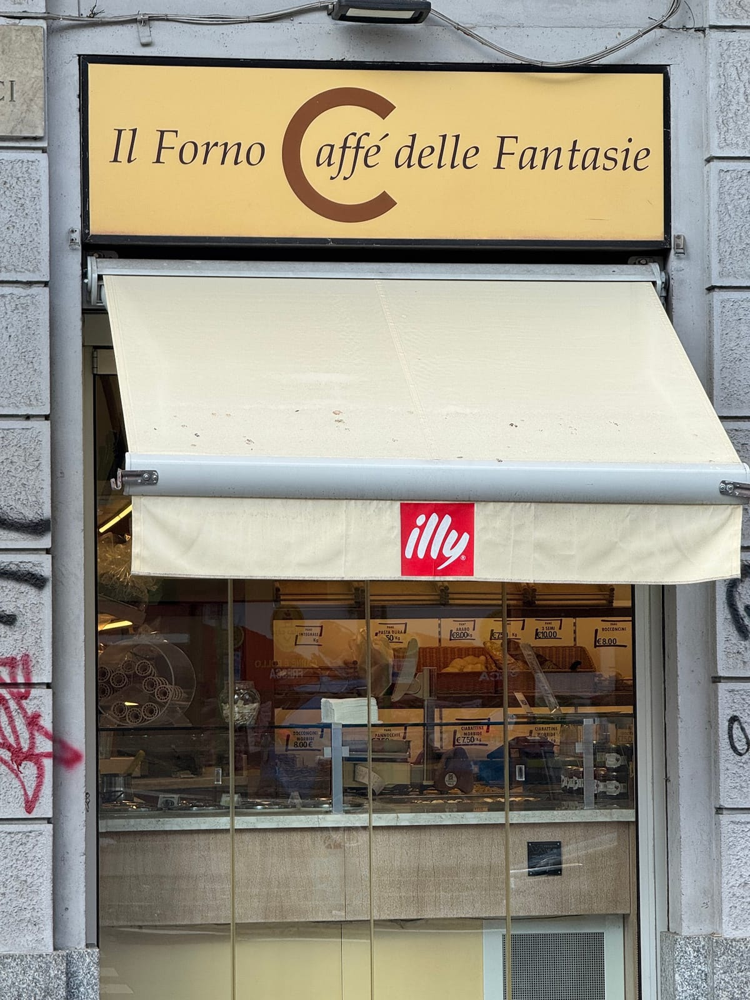
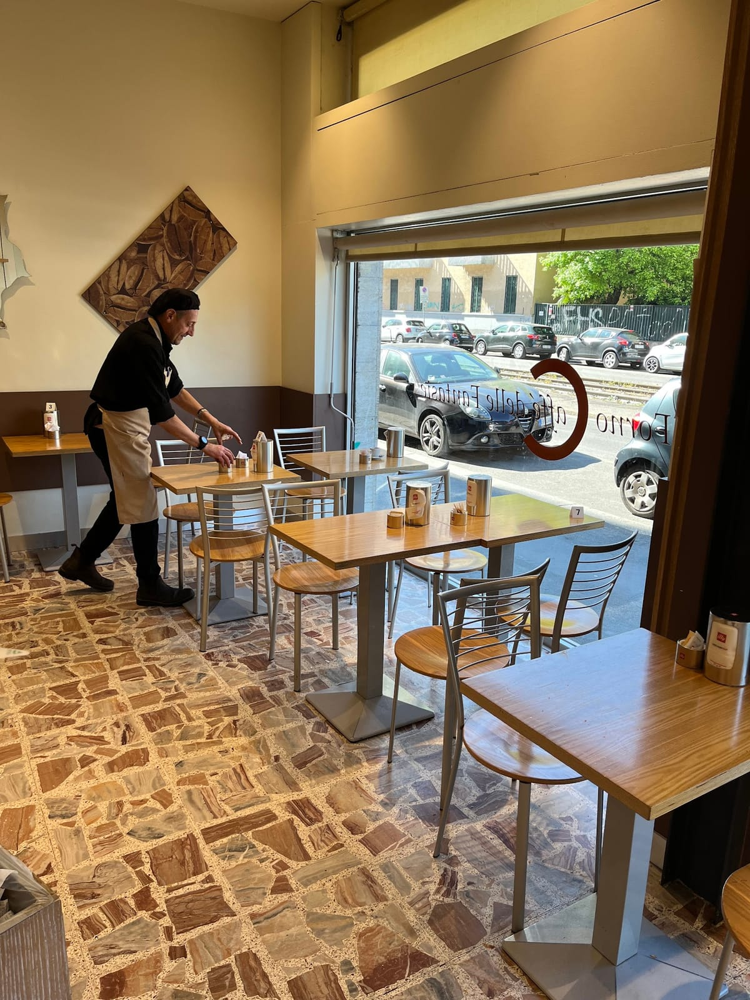
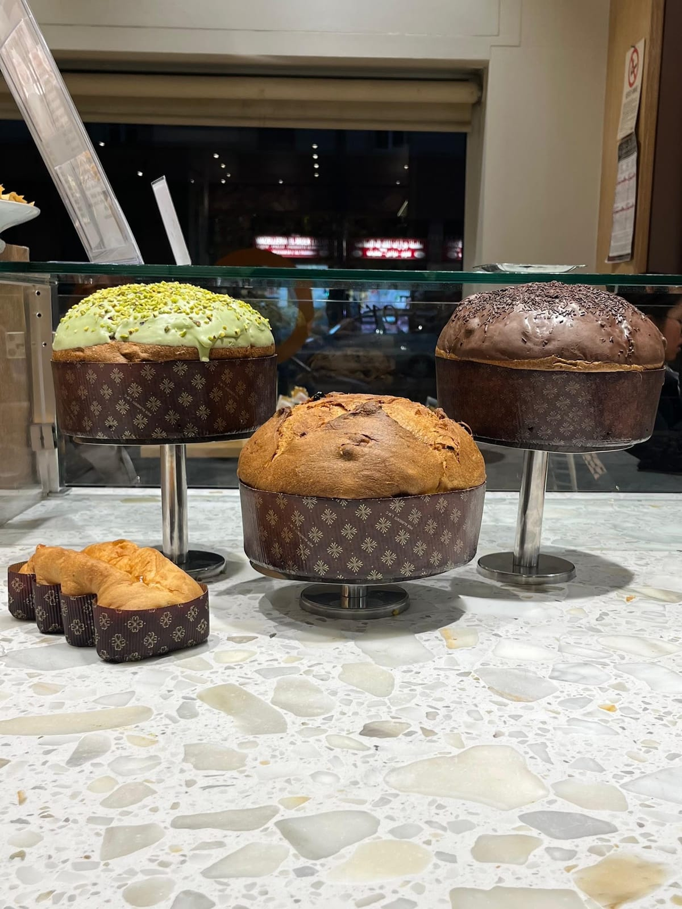
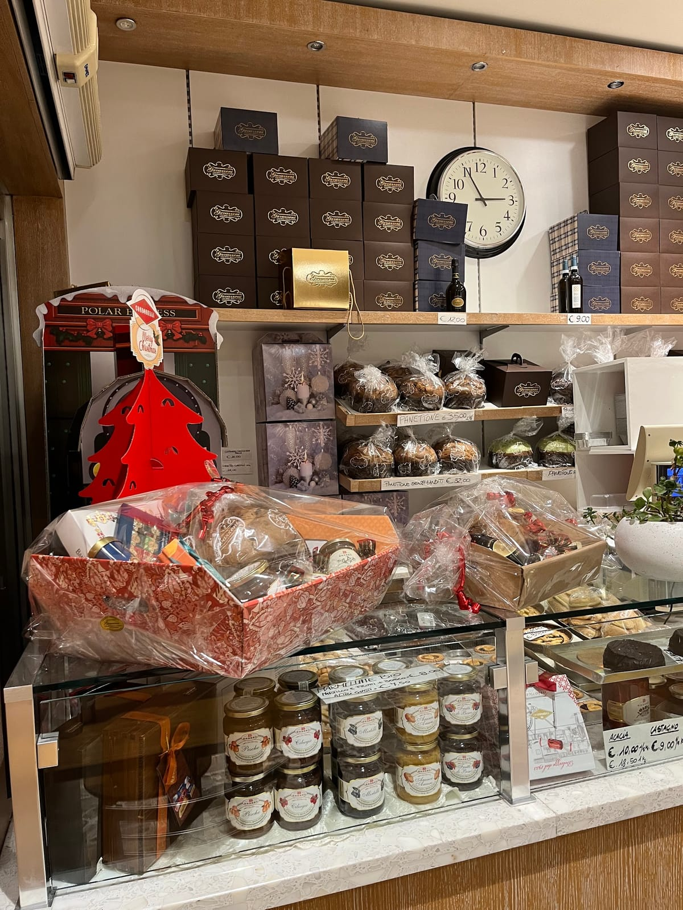
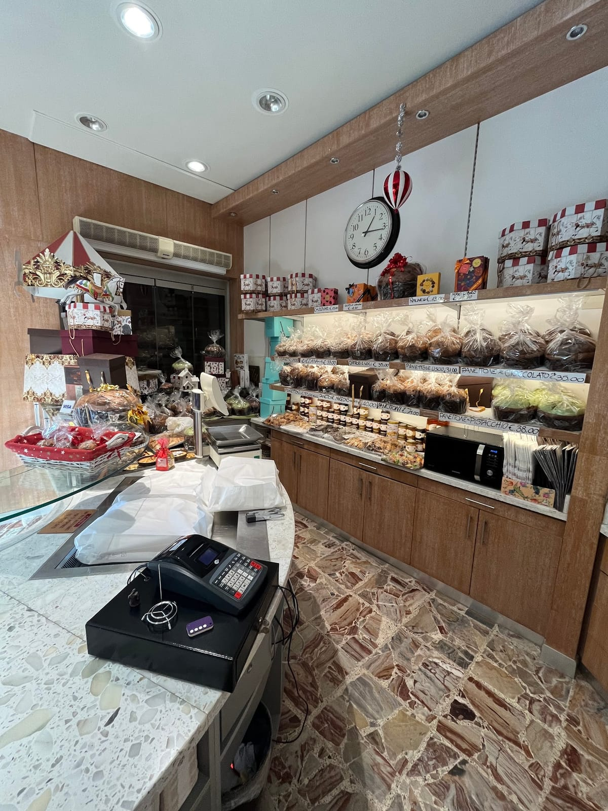

4,5 ★★★★½ · 278 recensioni
PANE e FANTASIA.
Le mattine di San Siro escono dal forno di Via Carlo Dolci dal 1962: michette, brioches, pizza al taglio e caffè — con orario continuato, dalle 7 alle 20.
La nostra storia
UNA FAMIGLIA, un forno
Tutto comincia nel 1962, quando papà Edo Gavazzeni apre il suo primo forno a Milano, in piazza Prealpi. Il pane è quello di ogni giorno, fatto con le mani e con pazienza — ma accanto alle michette spuntano subito le sue «fantasie»: dolci, trecce, focacce che cambiano col tempo e con le stagioni.
Da allora la famiglia non ha mai smesso di sfornare. Mamma Giusy ha insegnato a tutti che in bottega si entra come a casa: ogni cliente ha il suo saluto, e ogni saluto il suo sorriso. Oggi i figli portano avanti forno e caffè in Via Carlo Dolci, con lo stesso ritmo di sempre: si accende presto, si spegne tardi.

Il registro quotidiano
IL PANE di tutti i giorni
Michette, ciabattine, pannocchie, pane arabo, ai cereali, ai 5 semi: il muro del pane si riempie ogni mattina e si svuota ogni sera. Prezzi scritti a mano, come una volta — dal chilo, senza sorprese.
- Michette e pannocchie6,00 €/kg
- Ciabattine morbide o croccanti7,50 €/kg
- Pane arabo · pasta dura7,50 €/kg
- Bocconcini8,00 €/kg
- Cereali · 5 semi10,00 €/kg


La carta, coi prezzi veri
LE FANTASIE
Sfornate ogni mattina, dalla ricetta di casa. I prezzi sono quelli del listino in negozio: da riconfermare al banco per le proposte del giorno.
- 0,80–1,50 €
Brioches, tanti ripieni
Vuote, albicocca, cioccolato, lampone, mirtillo, pistacchio, crema — anche integrali e vegane.
- 1,50 €
Treccia acero e noci
La fantasia che profuma di colazione lenta; c'è anche con l'uvetta.
- 2,50 €
Krapfen alla crema pasticcera
Fritto come si deve, farcito al momento giusto.
- 1,20 €
Strudel di mele
E accanto: cremonese (0,60 €), ciambelle, muffin.
- 35,00 €/kg
Crostate e torte artigianali
Frutta fresca e frolla di casa; torte anche su ordinazione.
- 31–38 €/kg
Il panettone delle feste
Stagionale: classico, al cioccolato, al pistacchio — sfornato qui.
- al banco
Pizza al taglio
Teglie del giorno: pomodoro e olive, acciughe, zucchine e stracchino…
- al banco
Focacce
Alta e morbida o alla genovese, con l'olio che si sente.
- 12–30 €/kg
Pasta fresca
Tagliatelle 12 €/kg · tortelli ricotta e spinaci, cappelletti, ravioli alla borragine 30 €/kg.
- del giorno
Primi pronti, anche da asporto
Il pranzo dell'ufficio che sa di casa: lasagne, gratin, verdure ripiene.
- 1,20 €
Caffè espresso
Al banco o al tavolino dell'angolo caffè; macchiato allo stesso prezzo.
- 1,50 €
Cappuccino
Con la brioche accanto è la colazione di Via Dolci. Anche soia o mandorla.
- 1,40 €
Marocchino
E poi: caffè corretto 1,60 €, shakerato 3,00 €, orzo e ginseng.
- 3,00 €
Cioccolata calda
Con the e tisane (2,00 €) per i pomeriggi lenti. Asporto +0,10 €.

Non solo forno
DALLA COLAZIONE alla cena
Cappuccino e brioche all'alba, il trancio a mezzogiorno, la pasta fresca e i primi pronti per la sera: il banco cambia con le ore, il forno non si ferma mai. Sul posto, da portare via o direttamente a casa tua.
Dicono di noi
4,5 ★ su 278 recensioni Google
«Panetterie e pasticceria in via Dolci, nomen omen. Oltre a pane, pizze e focacce offre una vasta scelta di mignon, biscotti e torte.»
G B · Local Guide
«Pasticceria deliziosa. Torta fresca, ben bilanciata e visivamente curata nei dettagli. Si sente che è un prodotto artigianale fatto con attenzione. Tornerò sicuramente.»
Mario
«Locale piccolo ma accogliente, il personale è gentile ed educato, per quanto riguarda il cibo è veramente ottimo e a prezzi onesti. Lo consiglio vivamente.»
Andrea
«Forno in zona Segesta, molto rinomato in zona. Prepara sia dolci che salati, la scelta è vasta. Il pane ai 3 cioccolati è squisito, uno dei dolci più buoni che hanno.»
Lusio · Local Guide
«Da sempre il mio posto preferito per la colazione, buonissime le brioches con tanti ripieni differenti, la mia preferita alla crema pasticcera. Mi piacciono tantissimo anche le focacce e le pizze.»
Nadia · Local Guide
Dove & quando
IN VIA Carlo Dolci
Via Carlo Dolci 38, 20148 Milano · a due passi dalla M5 Segesta
…
| Lunedì | 7:00 – 20:00 |
| Martedì | 7:00 – 20:00 |
| Mercoledì | 7:00 – 20:00 |
| Giovedì | 7:00 – 20:00 |
| Venerdì | 7:00 – 20:00 |
| Sabato | 7:00 – 20:00 |
| Domenica | Chiuso |
Orario continuato: il forno non chiude a pranzo.





Domande frequenti
Fate consegna a domicilio?
Sì: oltre alla consumazione sul posto e al ritiro, consegniamo a domicilio. Telefonaci allo 02 404 2022 per ordinare.
Che orari fate?
Dal lunedì al sabato, dalle 7:00 alle 20:00 — orario continuato, il forno non chiude a pranzo. La domenica riposiamo.
Fate anche pasta fresca e primi piatti?
Sì: tagliatelle, tortelli ricotta e spinaci, cappelletti e ravioli alla borragine, più primi pronti anche da asporto.
Fate torte su ordinazione?
Sì, torte artigianali e crostate su ordinazione: passa in negozio o chiamaci per gusto e data di ritiro.
Dove siete e come si arriva?
In Via Carlo Dolci 38, zona San Siro, a pochi passi dalla fermata M5 Segesta.